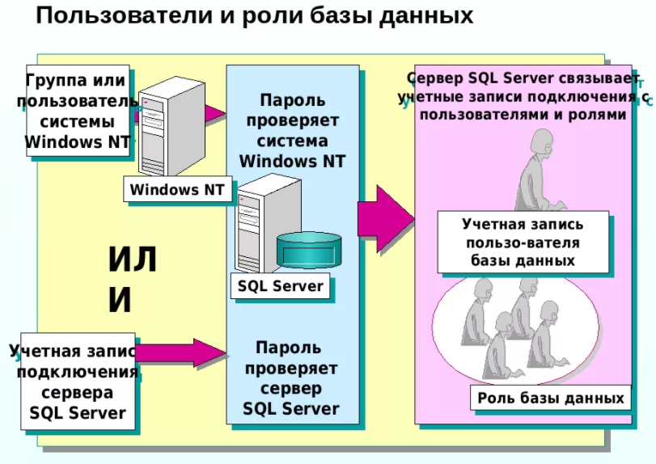
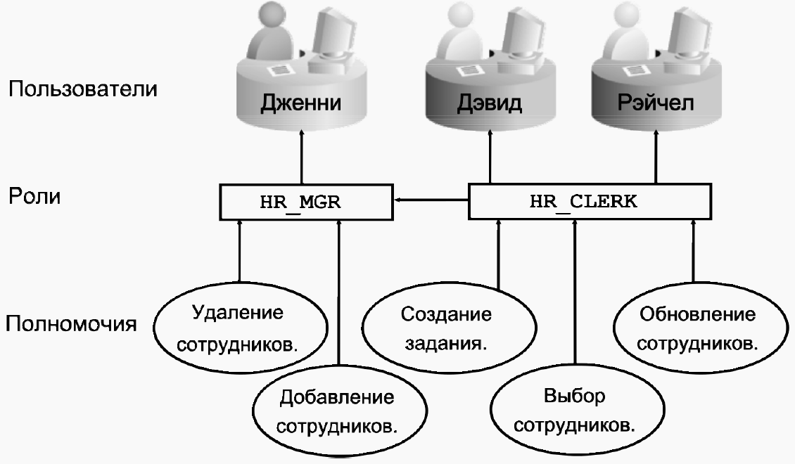
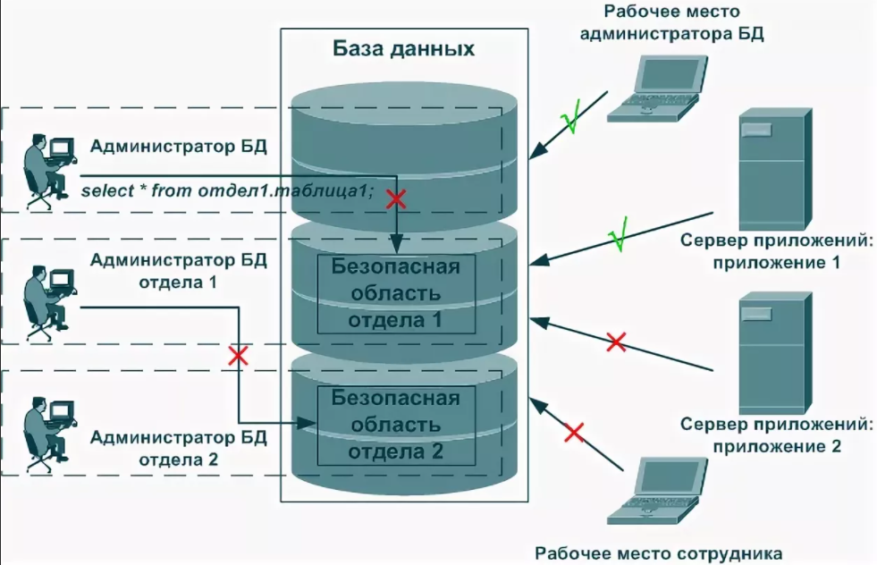

2.Пользователи и схемы базы данных. Привилегии, назначение привилегий. Управление пользователями баз данных
Пользователи баз данных и схемы

Рис.2.1 Пользователи и роли базы данныx
Пользователи баз данных (database users) —
это специальные объекты, которые создаются на уровне базы данных и используются для предоставления разрешений в базе данных (на таблицы, представления, хранимые процедуры).
При создании любой базы данных в ней автоматически создаются четыре специальных пользователя:
- · dbo (от database owner) — пользователь-владелец базы данных. Он автоматически создается для того логина, от имени которого была создана эта база данных. Конечно же, как владелец, он получает полные права на свою базу данных (при помощи встроенной роли базы данных db_owner);
- · guest (гость) — этот специальный пользователь предназначен для предоставления разрешений всем логинам, которым не соответствует ни один пользователь в базе данных. По умолчанию у этого пользователя нет права login для базы данных, и, следовательно, работать он не будет. Этот пользователь используется чаще всего для предоставления разрешений логинам на какие-то учебные/тестовые базы данных или на базы данных-справочники, доступные только на чтение;
- · INFORMATION_SCHEMA — этому пользователю не может соответствовать ни один логин. Его единственное значение — быть владельцем схемы INFORMATION_SCHEMA, в которой хранятся представления системной информации для базы данных;
- · sys — этому специальному пользователю, как и INFORMATION_SCHEMA, не могут соответствовать логины. Он является владельцем схемы sys, которой принадлежат системные объекты базы данных.
Роли базы данных
Обычно после создания логина и пользователя базы данных следующее, что нужно сделать, — предоставить пользователю разрешения в базе данных. Один из способов сделать это — воспользоваться ролями базы данных.
Роли базы данных — это специальные объекты, которые используются для упрощения предоставления разрешений в базах данных. В отличие от серверных ролей, которые могут быть только встроенными, роли баз данных могут быть как встроенными, так и пользовательскими. Встроенные роли баз данных обладают предопределенным набором разрешений, а пользовательские роли можно использовать для группировки пользователей при предоставлении разрешений. Обычно пользовательские роли используются только для логинов SQL Server, поскольку для группировки логинов Windows обычно удобнее и проще использовать группы Windows.
Вначале перечислим встроенные роли баз данных:
- public — эта специальная роль предназначена для предоставления разрешений сразу всем пользователям базы данных. Специально сделать пользователя членом этой роли или лишить его членства невозможно. Все пользователи базы данных получают права этой роли автоматически.
- · db_owner — этой роли автоматически предоставляются полные права на базу данных. Изначально права этой роли предоставляются только специальному пользователю dbo, а через него — логину, который создал эту базу данных;
- · db_accessadmin — роль для сотрудника, ответственного за пользователей базы данных. Этот сотрудник получит возможность создавать, изменять и удалять объекты пользователей баз данных, а также создавать схемы. Других прав в базе данных у него нет;
- · db_securityadmin— эта роль дополняет роль db_accessadmin. Сотрудник с правами этой роли получает возможность назначать разрешения на объекты базы данных и изменять членство во встроенных и пользовательских ролях. Прав на создание и изменение объектов пользователей у этой роли нет;
- · db_backupoperator — эта роль дает право выполнять резервное копирование базы данных;
- · db_ddladmin — эта роль применяется в редких ситуациях, когда пользователю необходимо дать право создавать, изменять и удалять любые объекты в базе данных, не предоставляя прав на информацию, которая содержится в существующих объектах;
- · db_datareader и db_datawriter — эти встроенные роли дают право просматривать и изменять соответственно (в том числе добавлять и удалять) любую информацию в базе данных. Очень часто пользователю необходимо дать права на чтение и запись информации во всех таблицах базы данных, не предоставляя ему лишних административных разрешений (на создание и удаление объектов, изменение прав и т. п.). Самый простой вариант в этой ситуации — воспользоваться этими двумя ролями.
- · db_denydatareader и db_denydatawriter— эти роли противоположны ролям db_datareader и db_datawriter. Роль db_ denydatareader явно запрещает просматривать какие-либо данные, а db_denydatawriter запрещает внесение изменений. Явный запрет всегда имеет приоритет перед явно предоставленными разрешениями. Обычно эти роли используются в ситуации, когда "разрешаем всем, а потом некоторым запрещаем".
Привилегии, предоставляемые пользователям

Рис.2.2 Привилегии, предоставляемые пользователям
Каждому пользователю (user name) базы данных предоставляются привилегии доступа к объектам базы данных, которые и являются вторым уровнем защиты базы данных. Привилегии, предоставленные пользователям, хранятся в самой базе данных как метаданные. Привилегии каждому пользователю предоставляются явно. Привилегии предоставляются на каждую таблицу (table) или просмотр (view) с указанием конкретных действий, которые может выполнять пользователь. Для работы с хранимыми процедурами (stored procedure) пользователю предоставляются отдельные привилегии.
Всеми привилегиями для работы с объектом владеют пользователь БУБОВА и владелец (создатель) объекта.
Владелец объекта и пользователь SYSDBA назначают привилегии прочим пользователям. Привилегии для управления объектом могут быть назначены полностью или частично.
Кроме того, эти же лица могут наделить любого пользователя правом наследования. Пользователь с правом наследования может по своему усмотрению наделять других пользователей привилегиями, причем передавать только те привилегии, которые имеет сам (в полном объеме или частично).
Для наделения пользователя привилегиями используется оператор GRANT', а для изъятия привилегий — оператор REVOKE.
Владелец базы данных и пользователь БУБОВА могут лишить привилегий любого пользователя.
Пользователь с правом наследования может лишить привилегий только тех пользователей, которым он предоставил привилегии.
Пользователя SYSDBA нельзя лишить привилегий, поэтому действие операторов GRANT и REVOKE на него не распространяется.
Оператор GRANT
Оператор GRANT предоставляет пользователю конкретные привилегии на конкретный объект. Ниже приведен список предоставляемых привилегий:
Insert — добавлять записи в таблицу;
Update — редактировать записи в таблице;
Delete — удалять записи из таблицы;
Select — читать таблицу;
Execute — выполнить хранимую процедуру;
References — сервер проверяет внешние ссылки на другие таблицы;
АН — предоставляет все вышеуказанные привилегии, за исключением Execute.
Привилегии предоставляются на один объект одному или нескольким пользователям. Если одному пользователю надо назначить привилегии для работы с несколькими объектами, то оператор GRANT выполняется несколько раз.
Особенностью оператора GRANT является то, что он может предоставить привилегии не существующему (не зарегистрированному в файле iscA.gdb) в данный момент времени пользователю.
Пример 1. Предоставить пользователю USER INS две привилегии для работы с таблицей Town.
GRANT Select, Insert ON Town TO USER JNS;
После выполнения оператора GRANT пользователь USERINS получит право на просмотр записей и добавление записей в таблице Town.
Пример 2. Предоставить пользователю USER CHEFF все привилегии для работы с таблицей Town.
GRANT All ON Town TO USERCHEFF;
Оператор может выдавать привилегии как для работы со всей таблицей, так и для работы с отдельными доменами (столбцами) таблицы, при этом формат оператора несколько изменяется.
Пример 3. Предоставить пользователю USERUPD две привилегии для работы с тремя столбцами таблицы Town.
GRANT Select, Update(Name book, Year, Price) ON Book TO
USER UPD;
Пример 4. Предоставить четырем пользователям две привилегии для работы с таблицей Town.
GRANT Select, Insert ON Town TO USERJ, USER_2, USER_3,
USER4;
После выполнения оператора GRANT четыре пользователя получат право на просмотр записей и добавление записей в таблице Town.
С помощью одного оператора GRANT можно назначить привилегии не более чем 1500 пользователям.
Пользователю привилегия для работы с хранимой процедурой выдается отдельно.
Пример 5. Предоставить пользователю USER CHEFF привилегию для работы с хранимой процедурой.
GRANT Execute ON PROCEDURE Ostatok TO USERCHEFF;
После выполнения этого оператора пользователь получит право для работы с хранимой процедурой Ostatok. Мало выдать пользователю привилегию для работы с хранимой процедурой, необходимо еще, чтобы и сама хранимая процедура имела привилегии для работы с таблицей или таблицами.
Оператор GRANT обладает свойством аддитивности.
Если у пользователя есть одна привилегия для работы с одной таблицей, то в любой момент времени этому пользователю можно добавить одну или несколько привилегий для работы с той же таблицей, т. е. привилегии накапливаются.
Назначение привилегий хранимой процедуре и триггеру
Хранимая процедура и триггер рассматриваются сервером InterBase как самостоятельные объекты базы данных. Поэтому им необходимо предоставить необходимые привилегии для работы с таблицами или другими объектами базы данных.
При работе с хранимыми процедурами ключевое слово PROCEDURE является обязательным.
Пример 6. Предоставить хранимой процедуре Ostatok все привилегии для работы с таблицей Воок.
GRANT Ail ON Воок ТО PROCEDURE Ostatok;
В примере 1. пользователю USER INS были выданы две привилегии Select и Insert для работы с таблицей Town. Если пользователь USER INS для добавления записи использует хранимую процедуру Contr?le, то и хранимая процедура должна иметь привилегию Insert для работы с таблицей Town.
Пример 7. Предоставить хранимой процедуре Contr?le привилегию Insert для работы с таблицей Town.
GRANT Insert ON Town TO PROCEDURE Contr?le;
Для того чтобы старшая хранимая процедура (Proc Parent) могла вызывать младшую хранимую процедуру (ProcChild) даже при отсутствии соответствующих привилегий у пользователя, необходимо предоставить соответствующие привилегии старшей процедуре.
Пример 8. Предоставить хранимой процедуре Proc_Parent привилегию для работы с хранимой процедурой Proc_Child.
GRANT Execute ON PROCEDURE Proc_Child TO Proc Parent;
При внесении изменений в хранимую процедуру с помощью команды ALTER PROCEDURE все привилегии, выданные процедуре, отменяются.
Привилегии, выданные хранимой процедуре или триггеру, проверяются один раз при открытии базы данных. Если хранимая процедура или триггер не имеют каких-либо привилегий для работы с таблицей (или таблицами), то при их вызове возбуждается исключительная ситуация, их работа прекращается и выдается сообщение об ошибке.
Назначение привилегий просмотрам
Просмотр (View) можно рассматривать как виртуальную таблицу. Он также является самостоятельным объектом базы данных и ему необходимо назначить привилегии доступа. Просмотры привилегии доступа назначаются с помощью оператора GRANT по правилам таблиц. В зависимости от вида просмотра — исполняемый или неисполняемый — назначаются соответствующие привилегии.
Просмотры являются мощным средством разграничения пользователей базы данных. Им (пользователям) можно предоставить просмотр как всей таблицы, так и ее частей, при этом сама база данных остается недоступной пользователю.
Просмотру дополнительно не выдается привилегия на извлечение записей таблицы, так как он построен на основе данных этой таблицы с помощью запроса SELECT.
Пример 9. Предоставить пользователю USER ] просматривать содержимое таблицы Town с помощью просмотра Vtown.
GRANT Select ON Vjown TO USERJ;
В этом примере предполагалось, что просмотр V_town был создан ранее.
Использование специального ключевого слова при работе с просмотрами, в отличие от хранимых процедур, не требуется.
Управление пользователями баз данных
Стабильная система управления пользователями – обязательное условие безопасности данных, хранящихся в любой реляционной СУБД. В языке SQL не существует единственной стандартной команды, предназначенной для создания пользователей базы данных – каждая реализация делает это по-своему. В одних реализациях эти специальные команды имеют определенное сходство, в то время как в других их синтаксис имеет существенные отличия. Однако независимо от конкретной реализации все основные принципы одинаковы.
Управление пользователями в среде MS SQL Server
Рассмотрим вопрос создания пользователей в среде MS SQL Server.
После проектирования логической структуры базы данных, связей между таблицами, ограничений целостности и других структур необходимо определить круг пользователей, которые будут иметь доступ к базе данных.
В системе SQL-сервер организована двухуровневая настройка ограничения доступа к данным. На первом уровне необходимо создать так называемую учетную запись пользователя (login), что позволяет ему подключиться к самому серверу, но не дает автоматического доступа к базам данных. На втором уровне для каждой базы данных SQL-сервера на основании учетной записи необходимо создать запись пользователя. На основе прав, выданных пользователю как пользователю базы данных (user), его регистрационное имя (login) получает доступ к соответствующей базе данных. В разных базах данных login одного и того же пользователя может иметь одинаковые или разные имена user с разными правами доступа. Иначе говоря, с помощью учетной записи пользователя осуществляется подключение к SQL-серверу, после чего определяются его уровни доступа для каждой базы данных в отдельности.
В системе SQL-сервер существуют дополнительные объекты – роли, которые определяют уровень доступа к объектам SQL-сервера. Они разделены на две группы: назначаемые для учетных записей пользователя сервера и используемые для ограничения доступа к объектам базы данных.
Итак, на уровне сервера система безопасности оперирует следующими понятиями:
- аутентификация ;
- учетная запись ;
- встроенные роли сервера.
На уровне базы данных применяются следующие понятия;
- пользователь базы данных;
- фиксированная роль базы данных;
- пользовательская роль базы данных.
Режимы аутентификации
SQL Server предлагает два режима аутентификации пользователей:
- режим аутентификации средствами Windows NT/2000;
- смешанный режим аутентификации (Windows NT Authentication and SQL Server Authentication).
Администрирование системы безопасности

Рис.2.3 Защита баз данных.
Для создания пользователя в среде MS SQL Server следует предпринять следующие шаги:
Создать в базе данных учетную запись пользователя, указав для него пароль и принятое по умолчанию имя базы данных (процедура sp_addlogin ).
Добавить этого пользователя во все необходимые базы данных (процедура sp_adduser ).
Предоставить ему в каждой базе данных соответствующие привилегии (команда GRANT ) .
Создание новой учетной записи может быть произведено с помощью системной хранимой процедуры:
sp_addlogin
[@login=] 'учетная_запись'
[, [@password=] 'пароль']
[, [@defdb=] 'база_данных_по_умолчанию']
После завершения аутентификации и получения идентификатора учетной записи (login ID) пользователь считается зарегистрированным, и ему предоставляется доступ к серверу. Для каждой базы данных, к объектам которой он намерен получить доступ, учетная запись пользователя (login) ассоциируется с пользователем (user) конкретной базы данных, что осуществляется посредством процедуры:
sp_adduser
[@loginame=] 'учетная_запись'
[, [@name_in_db=] 'имя_пользователя']
[, [@grpname=] 'имя_роли']
Отобразить учетную запись Windows NT в имя пользователя позволяет хранимая процедура:
sp_grantdbaccess
[@login=] ‘учетная_запись’
[, [@name_in_db=]‘имя_пользователя’]
Пользователь, который создает объект в базе данных (таблицу, хранимую процедуру, просмотр), становится его владельцем. Владелец объекта (database object owner dbo) имеет все права доступа к созданному им объекту. Чтобы пользователь мог создать объект, владелец базы данных (dbo) должен предоставить ему соответствующие права. Полное имя создаваемого объекта включает в себя имя создавшего его пользователя .
Владелец объекта не имеет специального пароля или особых прав доступа. Он неявно имеет полный доступ, но должен явно предоставить доступ другим пользователям.
SQL Server позволяет передавать права владения от одного пользователя другому с помощью процедуры:
sp_changeobjectowner
[@objname=] ‘имя_объекта’
[@newowner=] ‘имя_владельца’
Роль позволяет объединить в одну группу пользователей, выполняющих одинаковые функции.
В SQL Server реализовано два вида стандартных ролей: на уровне сервера и на уровне баз данных. При установке SQL Server создаются фиксированные роли сервера (например, sysadmin с правом выполнения любых функций SQL-сервера) и фиксированные роли базы данных (например, db_owner с правом полного доступа к базе данных или db_accessadmin с правом добавления и удаления пользователей ). Среди фиксированных ролей базы данных существует роль public, которая имеет специальное назначение, поскольку ее членами являются все пользователи, имеющие доступ к базе данных.
Можно включить любую учетную запись SQL Server (login) или учетную запись Windows NT в любую роль сервера.
Роли базы данных позволяют объединять пользователей в одну административную единицу и работать с ней как с обычным пользователем. Можно назначить права доступа к объектам базы данных для конкретной роли, при этом автоматически все члены этой роли наделяются одинаковыми правами.
В роль базы данных можно включить пользователей SQL Server, роли SQL Server, пользователей Windows NT.
Различные действия по отношению к роли осуществляются при помощи специальных процедур:
-
создание новой роли:
sp_addrole
[@rolename=] 'имя_роли'
[, [@ownername=] 'имя_владельца']
-
добавление пользователя к роли:
sp_addrolemember
[@rolename=] 'имя_роли',
[@membername=] 'имя_пользователя'
удаление пользователя из роли:
sp_droprolemember
[@rolename=] 'имя_роли',
[@membername=] 'имя_пользователя'
удаление роли:
sp_droprole
[@rolename=] 'имя_роли'